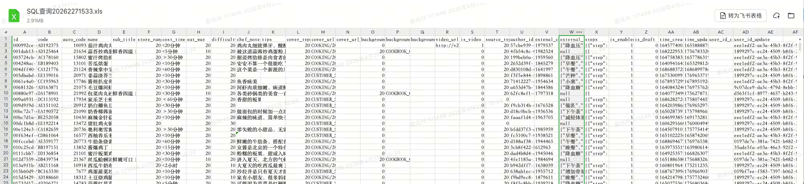
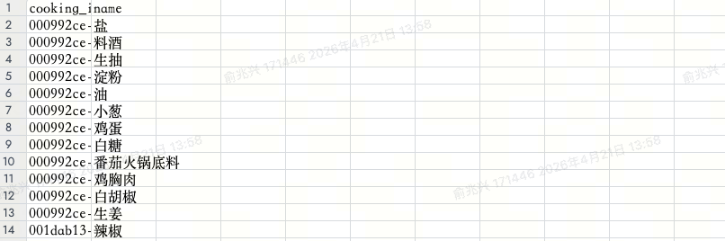
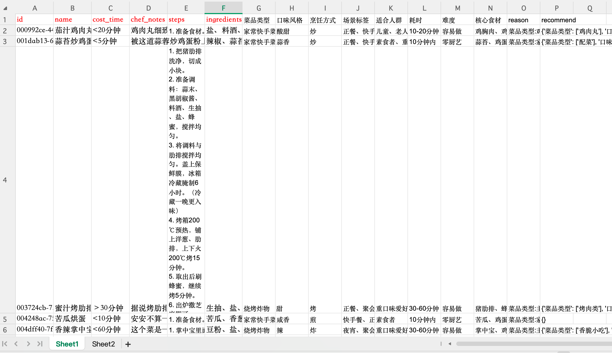
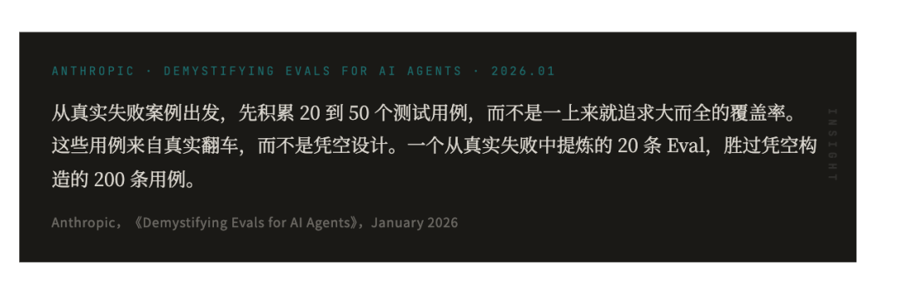

基于Dify工作流搭建AI菜谱打标
AI 业务应用的开发全流程和经验沉淀
一、背景与准备工作
与传统开发的不同
做 AI 应用开发跟传统开发有很大区别。没有产品经理给你画原型，你需要自己当产品、自己设计方案。虽然没有预设的截止时间，但也不能拖太久，需要自己把控节奏，多跟业务方沟通来建立信心。
需求背景
当前菜谱标签主要依赖社区人工打标，存在标签维度不完整、标准不统一的问题，难以支撑后续多维度分析、精准归类和用户推送。
二、数据预处理 —— 为 Dify 入参铺垫


- 菜谱基本信息表：包含菜谱标题、步骤描述、小贴士等
- 食材表：通过菜谱 ID 关联的食材清单
步骤数据转换
AI 的入参最好是自然语言。如果直接传 JSON 格式的数据，会增加模型的理解和解析成本。因此第一步是把结构化数据转成自然语言。
通过 Python 脚本批量将 JSON 格式的步骤数据转换为自然语言编号列表：
[{
"step": 1,
"content": "把猪肋排洗净，切成小块。",
"image_url": "COOKING/2022/..."
}, {
"step": 2,
"content": "准备调料：蒜末、黑胡椒酱...",
"image_url": "COOKING/2022/..."
},
...
]
1. 把猪肋排洗净，切成小块。 2. 准备调料：蒜末、黑胡椒酱、 料酒、生抽、盐、蜂蜜， 搅拌均匀。 3. 将调料与肋排搅拌均匀。 盖上保鲜膜，冰箱冷藏腌制 6小时。（冷藏一晚更入味） 4. 烤箱200℃预热，铺上洋葱、 肋排，上下火200℃烤15分钟。 5. 取出后刷蜂蜜，继续烤5分钟。 6. 出炉撒芝麻即可。
表格合并
食材表拷贝到菜谱的子表中，通过 Excel 的 VLOOKUP 关联函数将两份表格合并，只保留 Dify 调用所需的入参列。

三、提示词设计与迭代
准备好数据后，接下来就是写提示词和搭建 Dify 工作流。 提示词可以尝试用多个模型生成，找到合理且符合要求的版本。我第一版最终采用的是 GPT-5.4 生成的结果，给它一些参考模板和需求描述后生成如下提示词：
提示词核心设计
- 角色定义：朴朴超市菜谱内容打标助手
- 标签类型：烹饪方式、菜系/类型、食材（最多3个）、饮食场景、人群、口味
- 输出规范：每个菜谱 5-10 个标签，每个标签 2-6 字，避免重复
- 合规红线：严禁医疗功效、减肥功效、美容功效、绝对化用语
- 输出格式：严格 JSON 格式
第一版提示词生成结果还算接近，但远达不到上线标准——缺少标签枚举约束和分类标准，导致输出发散不可控，如只是美味儿童爱吃就打标到儿童但可能会忽视食用安全性。
Prompt是任务的说明书，你需要明确告诉模型:目标是什么、有哪些限制、希望它怎么做。就像写一份好需求,不要让模型"猜"你要什么。
四、方案概述
标签体系设计
{
"菜品类型": ["家常快手菜"],
"口味风格": ["酸甜"],
"烹饪方式": ["炒"],
"场景": ["正餐", "快手餐"],
"适合人群": ["儿童", "老人"],
"耗时": ["10-20分钟"],
"难度": "容易做",
"核心食材": ["鸡胸肉", "鸡蛋"],
"reason": { ... },
"recommend": { ... }
}
针对输出结果进行收敛，通过不断打磨再结合社区现有分类标准，根据llm上打印出reason和recommend标签不断完善标签枚举 再通过跟业务沟通最后设计了 7 大维度、60+ 标签的结构化体系：
| 维度 | 标签列表 |
|---|---|
| 菜品类型 | 家常快手菜、镇桌硬菜、滋养汤羹、凉拌开胃、慢火焖烧、烧烤炸物、甜品饮品、主食面点、干锅火锅、健身轻食 |
| 口味风格 | 辣、咖喱、糖醋、清淡、孜然、鱼香、蒜香、奶香、五香、酸甜、甜、咸香、黑椒 |
| 烹饪方式 | 蒸、红烧、火锅、煎、炖、干锅、卤、炸、烤、炒、煮、焖、拌 |
| 场景 | 早餐、正餐、快手餐、夜宵、下午茶、聚会节日、轻食、时令菜 |
| 适合人群 | 儿童、老人、孕期、健身人群、素食者、重口味爱好者 |
| 难度 | 零厨艺、容易做、有挑战 |
| 耗时 | 10分钟内、10-20分钟、20-30分钟、30-60分钟、1小时以上 |
完整的 workflow：📄 AI 菜谱打标工作流
整个核心思路是常量提取 + 提示词约束 + 大模型识别 + 后置程序校验 + few-shot 兜底：
- 通过提示词约束标签范围、判断逻辑和输出格式 — 限定枚举列表，确保输出可控
- 基于大模型进行标签识别 — 利用模型的语言理解能力，从菜谱内容中提取标签
- 对模型难以稳定命中的场景，补充 few-shot 示例和规则兜底 — 高频误判 case 压测，保证结果稳定
- 结合后置程序进行枚举值校验与映射修正 — 模型输出的别名、近义词统一映射到标准枚举
五、核心问题与解决方案汇总
在实际开发过程中，遇到了三个核心问题。这些问题的解决思路对后续类似项目有一些参考价值。
没有制定分类标准和标签内容约束，大模型思维过于发散，同一份输入会产生 N 种不同结果。
- 限定标签枚举列表，模型只能在枚举范围内选择
- 把枚举放到通用的 Python 节点中声明，避免每个节点重复定义
- 调低
temperature和top_p，大幅降低生成随机性 - 先生成 100 条数据给运营，让他们补充标签描述、收敛枚举范围 📄 菜谱分类标签
- 挑选有价值的标签，对有明确要求的标签内容进行描述，要求每个描述尽量简短准确
明明写了「无肉无海鲜必须返回素食者」，模型还是会漏掉。规则写了不代表模型会稳定执行。
- 除了定义规则外，明确要求「必须逐项执行判断逻辑，即使已命中其他标签」
- 添加输出前检查环节
- 给高频误判 case 加 few-shot，内部给出判断原因（正向原因 + 反向示例）
- 必要时增加后处理映射兜底
few-shot 不用多，3 到 5 条高质量样本就够。示例要覆盖高频误判场景，而不是平均铺开。后续可以用高频误判的 case 反复压测保证结果稳定。few-shot 有时比继续堆规则更有效。

比如烹饪方式里，模型总是输出「烧」，而枚举里要求的是「红烧」。提示词里明明写了映射，模型还是会输出非法值。
不要把所有事情都交给提示词，在后置节点做一层稳定的过滤和映射：
| 模型输出 | 映射结果 | |
|---|---|---|
| 烧 / 烧制 | → | 红烧 |
| 煲 / 煲汤 | → | 炖 |
| 焗 / 焖烧 | → | 焖 |
| 口味别名 | → | 统一映射到标准枚举 |
六、工程化实践
输出可追溯性
每次生成结果时，追加 reason 和 recommend 字段，方便追溯标签生成的原因，并给出枚举池补充建议：识别潜在新标签，辅助运营完善标签池
工作流节点设计
- 通过条件分支判断是否有
reason字段，有才追加recommend - 将追加了
recommend的分支和未追加的分支统一放到变量聚合器中输出，避免创建重复的结束节点
提示词调试技巧
建了一个同模型的 Dify 问答助手机器人 📄 问答助手机器人，专门用来调试提示词。
七、批量执行方案
飞书多维表格
- 通过字段捷径调用 Dify 接口
- JSON 提取器拆分返回字段
- 多维度视图方便运营浏览空标签，批量更新失败数据
- 对输入和输出进行编组，方便浏览
⚠️ 缺点：有限流，生成速度较慢，不适合大批量
自写 Python 批量调用程序
- 线程池并发，最多 10 个并发请求
- 单行失败自动重试（指数退避 / 固定间隔）
- 重试 2-3 次仍失败 → 维护失败行清单（如
main_failed_rows.json） - 支持「只重跑失败行 / 指定行号」，避免全量重跑
- 全部请求完成一次性io落表
分批处理与人工门控
100 条数据可以一次跑完，但 4000 条一次性跑完如果结果不满意，重复跑很容易让服务爆掉。
- 按批次执行：每批 200~500 条，每批结果落盘保存
- 日志与可观测性：打印「行号 + 主键/菜名 + 关键结果 + 耗时 + 重试次数」，便于复盘，发现问题随时终止
- 抽样复核：每批抽样 5%~10% 人工复核，决定是否继续下一批，减少错误扩散，记录通过率与常见误差，反向优化提示词和规则
八、调试与验证
不要直接拿一版提示词上全量，分三步走：
调规则、调 few-shot
调后处理映射
检查非空率
分析主要错判类型
重试、复盘
沉淀规则
各轮结果
- 第一轮（100 条）：字段命中率 100%，经运营验证整体高可用
- 第二轮（4000 条）：非空率 99%，仅约 10 条因输入参数为空未命中
- 第三轮（纠偏）：结合飞书多维表格重试，基本全量命中，仅剩 3 条需人工纠偏
知道何时停手
最后 4000 条数据里只有个别问题时，不要硬调提示词。已经是高准确率的情况下，再去塞提示词或堆约束反而会降低模型整体生成效果。剩下的事交给运营在飞书中去重跑或手动判断。
九、测评
两种评测方式对比
飞书多维表格插件评测
- 准备成本偏高，需要自己准备好多维表格要测试的数据
- 必须新增两列去输出评测结果，但这类结果运营通常并不关心，不应该为了评测去污染你的输出表格
- 整体链路也相对慢一些，频繁迭代时会拖节奏
- 不再维护了
- 飞书Dify工作流评测工具
公司自部署玄思平台评测
- 支持自定义数据集与评估器，并支持导入 Dify 调用日志快速建集
- 支持同一数据集多次评测结果对比，可以清晰看到每次迭代带来的效果变化，用数据驱动优化决策
- 可以建立周期性抽检机制，持续监控标签准确率
- 完全独立运行，不污染业务运行与输出表格
- 专人维护
- 玄思评测结果
评测数据准备50-100条即可，评测结果可能模型本身就存在误判，玄思测评目前用的qwen3.5本身就比较弱智，仅供参考，不全量4000条了，只建议作为参考提供个人工打标的方向，小范本平均能稳定到80+就够了。最终采纳标准还是以人工审核打标为准。
十、总结
这个项目最大的体会是：AI 应用开发的核心不是写代码，而是不断跟模型「对齐」。限定枚举比堆规则有效，程序兜底比硬压提示词靠谱，分阶段验证比一步到位现实。追求 100% 准确率的边际成本极高，学会在合适的时机交给人工。